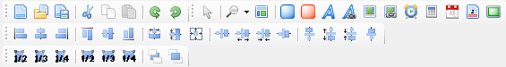

AxiomCoders Template Editor has 4 Toolbars. Some have corresponding Main Menu item, some of them not because they are specific and related for manipulation with Template Editor Items.

1. File Toolbar
Contains following commands: New Project, Open Project, Save, Cut, Copy, Paste.
2. Objects Toolbar

Contains following commands: Arrow Item, Zoom control, Preview mode, Static Balloon, Dynamic Balloon, Static Text, Dynamic Text, Static Image, Dynamic Image, Counter, Precalculated Item, Date-Time, Page Number, Rectangle Shape.
3. Positioning ToolBar
Contains following commands: Left align, Vertical Align, Right align, Top Align, Horizontal align, Bottom align, Same width, Same height, same size, Equal horizontal spacing, Increase horizontal spacing, Decrease horizontal spacing, No horizontal spacing, Same vertical spacing, Increase vertical spacing, Decrease vertical spacing, No vertical spacing.
4. Sizing and order Toolbar

Contains following commands: 1/2 Parent width, 1/3 parent width, 1/4 parent width, 1/2 Parent height, 1/3 Parent height, 1/4 Parent Height.